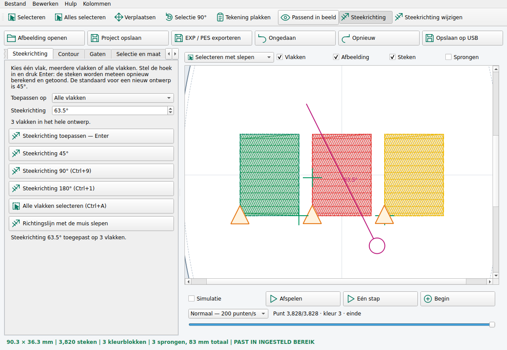

Selectie, tekening en borduursel samen bewerken. Alle bewerkingen hebben een pictogram met tekst.
py installeren.py
De bestaande omgeving bsenv wordt gebruikt. De programmamap BorduurStudio25 wordt bijgewerkt. Je opgeslagen projecten blijven behouden. De snelkoppeling BorduurStudio 2 start daarna versie 2.5.2.
Als de snelkoppeling niet start, gebruik in cmd:
"%USERPROFILE%\bsenv\Scripts\python.exe" "%USERPROFILE%\BorduurStudio25\main.py"
Dit is een update voor je bestaande Windows-installatie met Python 3.13. Bij installatie op een nieuwe laptop zijn Python en de benodigde onderdelen eerst nodig. De installer verandert geen beveiligingsinstellingen.
| Knop | Gebruik |
|---|---|
| ▧ Selecteren | Houd de linker muisknop ingedrukt en sleep een rechthoek over het gewenste gedeelte. Laat los om te selecteren. Ctrl voegt toe. |
| ▧ Alles selecteren | Klik op de knop of druk Ctrl+A. Ook een tekening zonder steken kan geselecteerd worden. |
| ↔ Verplaatsen | Kies Verplaatsen en sleep met de linker muisknop. Alle geselecteerde steekpunten of onderdelen bewegen in één keer. |
| ↻ Selectie 90° | De selectie draait een kwartslag rond haar gezamenlijke midden. De bijbehorende tekening draait mee. |
| ↻ Hele ontwerp 90° | Alle steken, bewerkbare vlakken en de tekening draaien samen. Een selectie vooraf is niet nodig. |
| ● Nieuwe kleur | Kies een kleur voor alleen de geselecteerde onderdelen of punten. Andere onderdelen met dezelfde oude kleur blijven behouden. |
| ↗ Steekrichting | De knop bovenaan toont/verbergt de richtingslijn. Selecteer een vlak om zijn vulrichting te zien. Zonder geselecteerd vlak zie je de algemene richting. Dit is de vulrichting, niet een weergave van iedere afzonderlijke naaldbeweging. |
Op Selectie en maat kies je wat je met de muis selecteert:
Heb je een EXP/PES zonder tekening geopend, dan zijn er alleen steken om te draaien of verplaatsen. De selectie krijgt geen fictieve tekening. Selectielijn en de onderdelenkolom blijven beschikbaar via Kolommen.
Je kunt ook Afbeelding openen gebruiken: de bestandskiezer start in Downloads. Selecteer de tekening en klik Openen. Een geopende of geplakte afbeelding wordt automatisch zichtbaar, ook als het vakje Afbeelding eerst uit stond. PNG, JPG/JPEG, BMP, WEBP en SVG kunnen als bestand geplakt worden. Gekopieerde afbeeldingsinhoud uit een tekenprogramma blijft ondersteund.
Een geplakte tekening is nog geen borduursel. Zet haar om in vlakken en maak borduursteken. Je kunt de geplakte tekening meteen draaien of de maat veranderen. Ongedaan maken herstelt het ontwerp van vóór het plakken.
Op Selectie en maat zie je de breedte en hoogte van het borduursel, het ontwerp en de selectie. Alle maten zijn in millimeters: 60 mm = 6 cm, 200 mm = 20 cm. Als er vlakken buiten de huidige borduurselectie bestaan, kan het ontwerp groter zijn dan het daadwerkelijke borduursel.
Vergroten of verkleinen van bestaande steken verandert ook de steekafstand. Voor grotere maatwijzigingen kun je opnieuw steken uit de aangepaste vlakken maken om de vulling opnieuw te berekenen. Dat vervangt handmatige veranderingen aan losse steekpunten. De EXP/PES-export splitst te lange borduursteken, maar corrigeert niet automatisch de dichtheid.
Het programma start gemaximaliseerd. De extra kolommen staan standaard dicht en zijn via Kolommen weer te openen. Compact scherm sluit ze. De bediening links kan naar beneden scrollen; de knoppen bovenaan krijgen bij weinig ruimte een uitklapmenu. Passend in beeld past de tekening in het werkvlak.
Bewaar je project als BST om tekening, vlakken, steken en plaatsing samen te bewaren. Ongedaan maken en Opnieuw werken ook voor de nieuwe bewerkingen. Na een handmatige bewerking staat bij het opslaan/exporteren Bestaande steken behouden standaard aangevinkt. Laat dat aan als je de puntbewerkingen wilt houden. Kies voor je Bernina EXP + INF + BMP en zet de drie bestanden samen op de USB-stick.
De raamgrens is een benadering; controleer het bereik op je machine. Mega-ontwerpen worden niet automatisch in raamposities verdeeld. Bij Mega is export boven 251 mm hoogte geblokkeerd. Maak een proefborduursel met passende versteviging.
| Bediening | Resultaat |
|---|---|
| Nieuw ontwerp / knop 45° | Standaardrichting 45° |
| Ctrl+9 / knop 90° | Direct 90° toepassen op het gekozen bereik |
| Ctrl+1 / knop 180° | Direct 180° toepassen op het gekozen bereik |
| Hoekveld + Enter | Elke gewenste hoek per 0,1°, ook met decimale komma |
Enter in het hoekveld op Vlakken werkt voor één of meerdere geselecteerde vlakken. Andere vlakken behouden hun eigen hoek. De steken en onderlagen worden opnieuw uit de vlakinstellingen berekend; handmatige bewerkingen van losse steekpunten worden daardoor vervangen. Ongedaan maken herstelt de vorige vlakken en steken in één stap. Bij Alle vlakken wordt een eerdere beperkte borduurselectie opgeheven, zodat alle vlakken zichtbaar worden geborduurd.
Heb je alleen een tekening geopend? Kies Alle vlakken en druk Enter om deze naar vlakken en steken om te zetten. Voor een los EXP/PES-bestand zonder vlakken is de oorspronkelijke tekening of een BST-project met vlakken nodig om de vulrichting opnieuw te berekenen. Bij 180° liggen vulrijen horizontaal; bij 90° verticaal. Contouronderlagen en verbindingssteken blijven hun eigen route volgen.

Deze versie is softwarematig gecontroleerd op Linux, inclusief slepen met de muis, klembordbeelden, gezamenlijke bewerkingen, projectherstel en machine-export. De installatie en bediening zijn nog niet op jouw Windows-laptop of fysieke Bernina getest. Het is een zelfstandig programma, geen BERNINA-product.